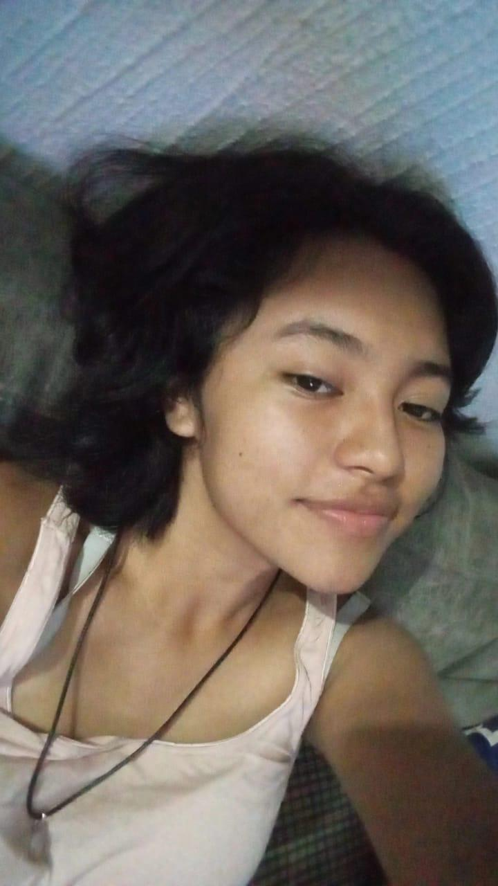
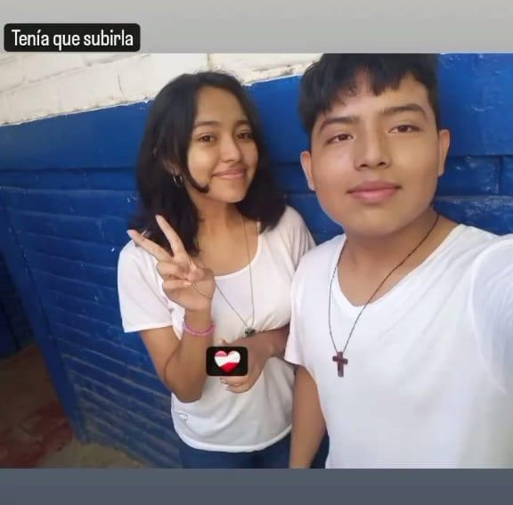
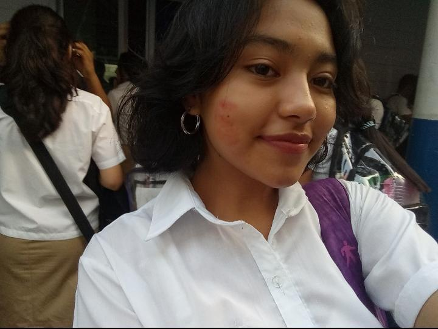
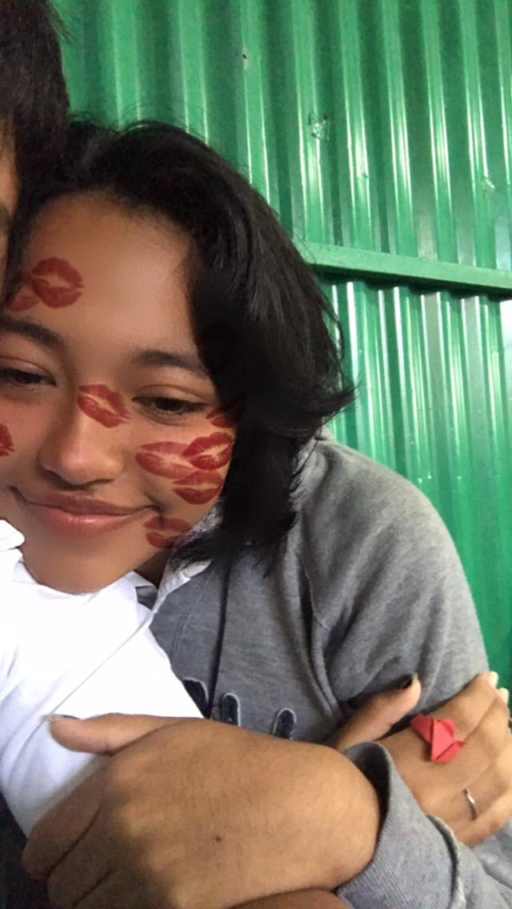
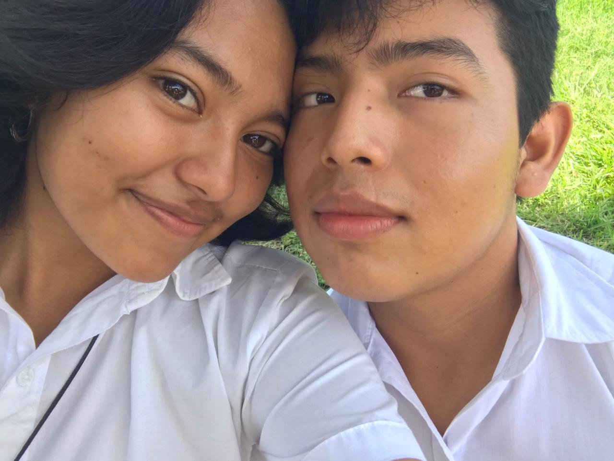

Para ti mi niña
Pues por donde empezar. Yo no tengo un buen historial en el amor, pero quien diria que me terminaria enamorando perdidamente de ti, entre mas pase el tiempo mas me gustas y mas me enamoro,
creo que no eres conciente de lo que tu me haces sentir, el tan solo saber que existes en mi vida es suficiente para sacarme una sonrisa, se que esto no sera facil, pero quiero estar contigo, y no para un rato si no para algo duradero
desde el dia que te conoci me gustaste y ese chambre fue la excusa perfecta para asercarme a ti y poder hablar contigo
De echo desde el inicio no pude disimular que me gustabas pues recuerdo cuando nos sentabamos en nuestras horas libres en el chalet y nos agarrabamos las manos casi siempre, mientras hablabamos de tus canciones favoritas, siempre esperaba a que llegara jueves para poder hablar contigo y poder tomar tu mano y poder mirar tus ojos
poder escuchar tu dulce voz, creeme no se como explicar lo feliz que estoy que hayas aparecido en mi vida
Antes de conocerte decia no existia nada mas lindo que ver un anochecer y ver a mi amada luna hasta que te conoci y vi que existe una excepcion y esa esres tu,
tu cabello, tu sonrisa, tus manos, tu cuerpo, tus labios, tu forma de ser, tus locuras, tus abrazos, tu aroma, tus caricias, todo lo que seas tu
Lo mas probable es que aun no creas lo que te digo y tal vez pienses que esto es un sueño, pero no, no es asi, y quiero que me creas y daria lo que sea para que te vieras atravez de mis ojos
por que me siento seguro contigo por que ya no le temo a las cosas de mi pasado la razon por las que siempre quiero abrazarte y besarte, mi amor si te vieras como yo te veo nunca te sentirias insuficente
y haceptarias que eres una persona maravillosa y que todas las cosas lindas que digo de ti se quedan cortas, nunca existira la forma de como expresar o pensar o explicar lo especial que resultas ser ante mis ojos
Eres lo mejor que me ha pasado, nunca me cansare de decirtelo, y nunca me cansare de decirte lo mucho que me gustas, si todo esto fue una coincidencia estoy super feliz que haya pasado aunque se que Dios te puso en mi camino
y se lo agardezco eternamente por ese dettalle tan precioso que hizo con ponerte en mi vida
Estoy enamorado de ti como no tienes idea y lo se, por que no dejo de pensar en ti, me encanta todo de ti, eres la razon por la cual me siento seguro y sin miedo, si me dieran la oportunidad de conocerte otra vez sin duda alguna volveria a tomarla y esta vez no temer a decirte lo mucho que me gustas
Has hecho que mi corazon lata mas rapido con una sola mirada de tus ojos
Salmos 4:9
Me gustas, me encaantas, me facinas
Para: Jimena Fiorella Zalayandia Martinez





Con mucho amor y cariño pa ti